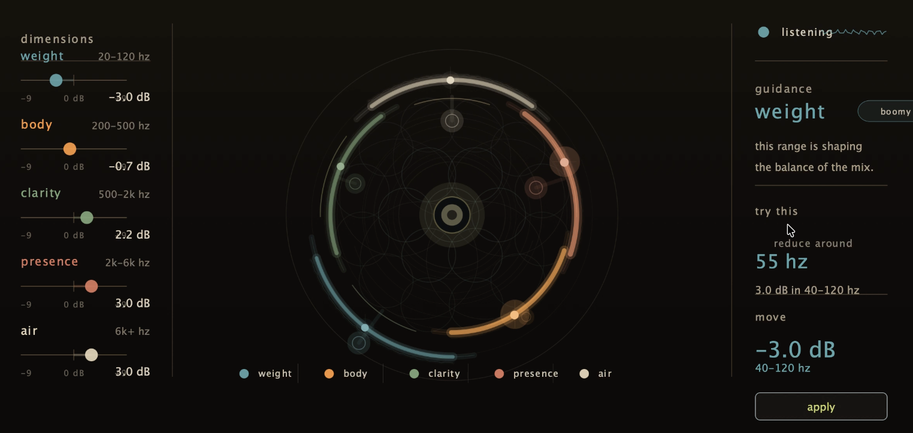

free macOS beta
Compass EQ
It is an EQ. Try it on a real session. Tell me what should change.
- price
- free
- version
- beta 1
- formats
- AU, VST3

download
Download. Install. Try it.
Free macOS beta for Logic, Cubase, and AU/VST3 hosts.
feedback
Send one useful note.
Include your DAW, macOS version, what you used it on, and what felt off.
Send feedback
Short notes are useful. Long essays are also allowed, unfortunately.